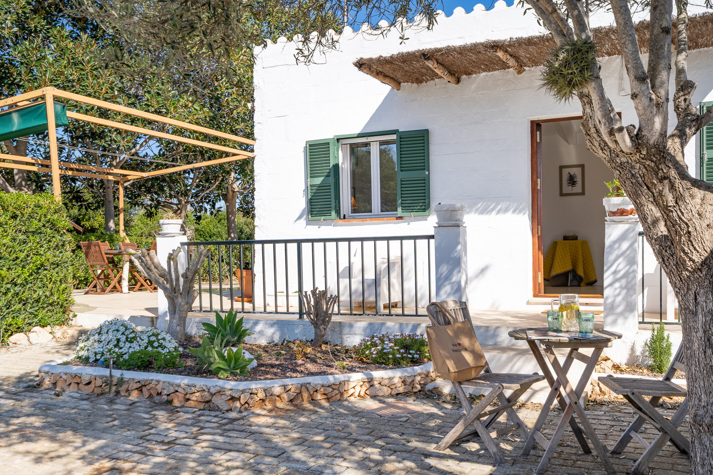

€750.000
Torret, Sant Lluís, Menorca
Open the listingCountry character with modern comfort: lavender and fruit-tree gardens, vegetable plot, elegant outdoor pergola and a private pool on nearly 2,000 m² in Torret. Serene rural living under €800k — bargain versus polished south-coast villas. Distinct from board torret (91922).
Opened 4 Sep 2026. Asking €750,000. E&V Property ID W-048LKC. Specs: 4 bed / 2 bath / ~195 m² / ~1,914 m² / year 2002 / oil heating + AC / basement lounge. Pool is private above-ground. Habitable now.